Established by Istvan Scrimgeour & Pansy Cradledew late in the last century, the ISSF is perhaps the only organisation of note where those who have lost their hearts to mundane items of stationery can find a home.
Even as we speak, Istvan & Pansy are compiling a book of paeans to stationery, excerpts from which will appear here. Please submit your own contributions!
Meanwhile, for the delight of all stationery fanatics, here is a gallery of choice items!
THE STAPLER
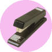
THE PAPER CLIP
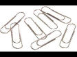
THE HIGHLIGHTER
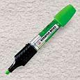
THE DATE STAMP
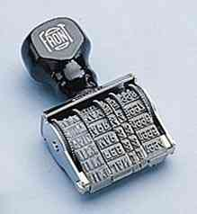
THE CORRECTION FLUID
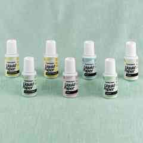
THE HOLE PUNCH
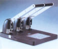
THE POST-IT® NOTE
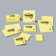
THE SCISSORS
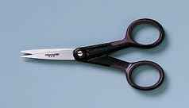
THE DESK ORGANISER
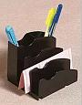
THE RING BINDER
THE RUBBER BAND
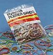
AND, OF COURSE, THE MAJESTIC PENCIL SHARPENER!
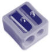